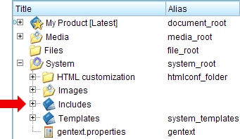
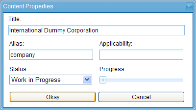
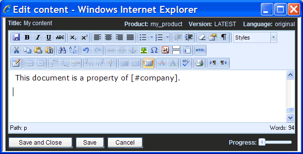
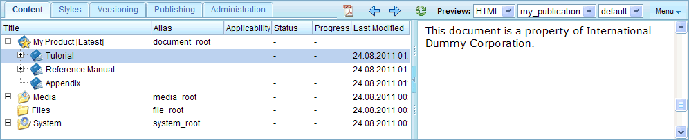
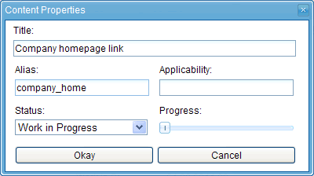
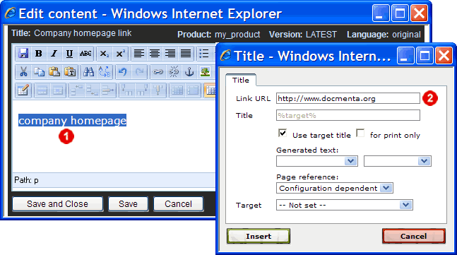
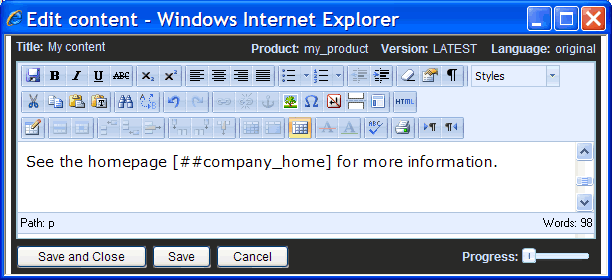
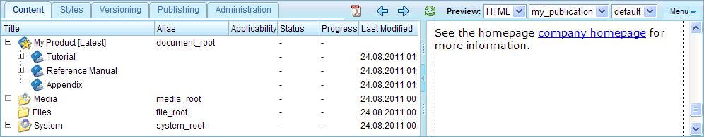
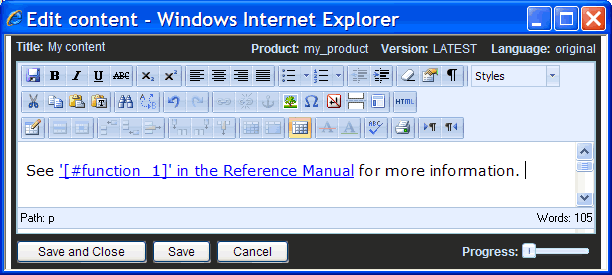
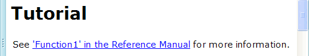

1.11.2. Inline inclusions
Structural inclusions allow you to include nodes on the product-tree level. Inline-inclusions on the other hand allow you to insert the title or content of a node within a paragraph.
Let's assume you have to insert the same text again and again within the documentation, e.g. a long company name. Instead of typing the company name again and again, you could include a content-node which contains the company name. You then just have to type the shorter alias name of the content-node instead of the complete company name. Furthermore, if the company name later on changes, you just have to change the company name once in the included node. The changed company name will then appear throughout the documentation where the node was included.
Inserting an inline-inclusion is like inserting any other text. Inline-inclusions have one of the following three patterns, depending on whether the title of a referenced node, the content of the referenced node or a gentext phrase shall be included:
| Inline-inclusion pattern | Description |
|---|---|
| [#alias] | Include the title of the node with the given alias name. Including the title of a node is allowed for section- and content-nodes. This type of inline-inclusion is called title-inclusion. |
| [##alias] | Include the content of the node with the given alias name. This type of inline-inclusion is only allowed for content-nodes. This type of inline-inclusion is called content-inclusion. |
| [$key] | Includes a text phrase defined in the gentext.properties file for the given key. See Section 2.3.6, “Gentext configuration” for more information. This type of inline-inclusion is called gentext-inclusion. |
Example 1: Title-inclusion
As an example, we first create the node that shall be included. You can place nodes which shall be included via inline-inclusion at any position within the product-tree. However, a common place to store included nodes is the  System >
System >  Includes folder:
Includes folder:

Figure 1.11.4. The default "Includes" folder
Therefore, we create a new content-node as sub-node of the Includes folder. In the node-properties dialog enter the company name as the node's title and fill in an alias name (e.g. "company") as shown in the following screenshot:

Figure 1.11.5. Example: creating a content-node containing text to be included
You can now insert the company name in the content of any other node by just typing the text "[#company]". As an example, open the content-editor for the content-node in the "Tutorial" section. Insert a new paragraph at the beginning of the content which contains the text "This document is a property of [#company].".

Figure 1.11.6. Including the node with alias "company" into the content
Save the content-node and view the content in the preview-area. As you can see the preview shows the text "This document is a property of International Dummy Corporation.".

Figure 1.11.7. Preview of inline inclusion
Example 2: Content-inclusion
As an example of using content-inclusion, we consider the situation that we want to include a link to a homepage. But we do not want to create the link from scratch every time when the homepage has to be referenced. Instead the link shall be created only once in a content-node and then be inserted via inline-inclusion.
In our example, create a new content-node within the "Includes" folder. In the node-properties dialog fill in the title "Link to company homepage" and the alias name "company_home" as shown in the following screenshot:

Figure 1.11.8. Example: creating a content-node containing a link
Then open the content-editor for this node and create an external link to the company's homepage, i.e. enter and select the link text  , click the "Insert/edit link" button and enter the URL in the URL field of the link dialog
, click the "Insert/edit link" button and enter the URL in the URL field of the link dialog  , e.g. "http://www.docmenta.org" (see following screenshot):
, e.g. "http://www.docmenta.org" (see following screenshot):

Figure 1.11.9. Example: Creating the homepage link
Save the node and now open the content-editor for the content-node where the homepage-link shall be inserted. Insert for example the text "See the homepage [##company] for more information.":

Figure 1.11.10. Example: Adding the homepage link using inline inclusion
Save the content-node and view the content in the preview-area. As you can see the preview now shows the link to the homepage.

Figure 1.11.11. Preview of the inserted link
Tip: Inserting inline images
Use content-inclusion, if you have to insert the same inline image very often. For example, create a content node with alias name my_button, that contains the inline image to be inserted. Now, at any place where you want to insert the inline image, just type the text [##my_button]. Another advantage of this solution is, if you later on have to change the size of the image, you just have to edit the image once in the included node.
Example 3: Using title-inclusions in links
Consider the scenario that you have to create a link to a section which is part of another publication. In our example, we assume that the "Tutorial" section and the "Reference Manual" section will be exported as two separate publications. Therefore, if we create a link in the "Tutorial" publication which references a node within the "Reference Manual", this would be a dead link. For dead links only the link text is shown, but the link is not clickable. Nevertheless, in such cases you can provide a descriptive link text which includes the title of the referenced section as well as the name of the publication.
In our example we have already inserted a link from within the "Tutorial" section to the section "Function 1" in the "Reference Manual" (see Section 1.4.1, “Referencing sections”). We can now improve the link text using inline-inclusion. Therefore replace the link text "here" by the text "'[#function_1]' in the Reference Manual".

Figure 1.11.12. Example: Using inline inclusion as part of the link text
When you now view the link in the preview area, the sentence is resolved to "See 'Function 1' in the Reference Manual for more information":

Figure 1.11.13. Preview of link with improved link text
Notes:
- In case you export a complete publication, i.e. a publication that contains the "Tutorial" section as well as the "Reference Manual" section, then there will be no dead link. Therefore, if you have enabled the link-option "Use target title", then the complete link text will be replaced by the target title, maybe including the chapter and page number (depending on the output-configuration and enabled link options).
- The formatting of links from one publication to another publication can more easily be handled by defining referenced publications in the publication configuration. See Section 1.13.5, “Inter-publication links” for details.